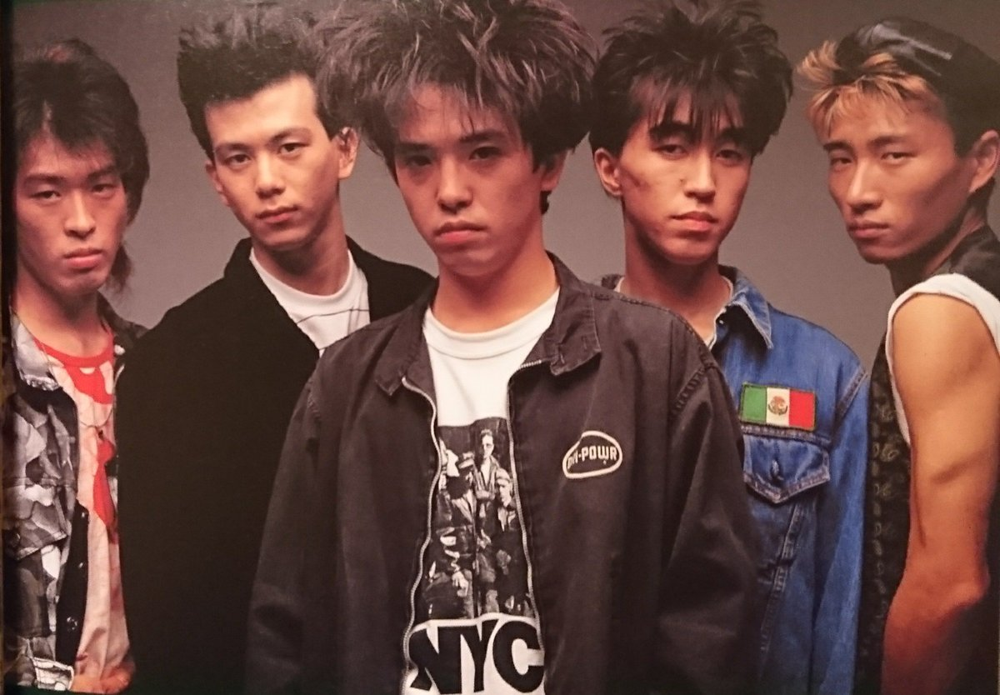
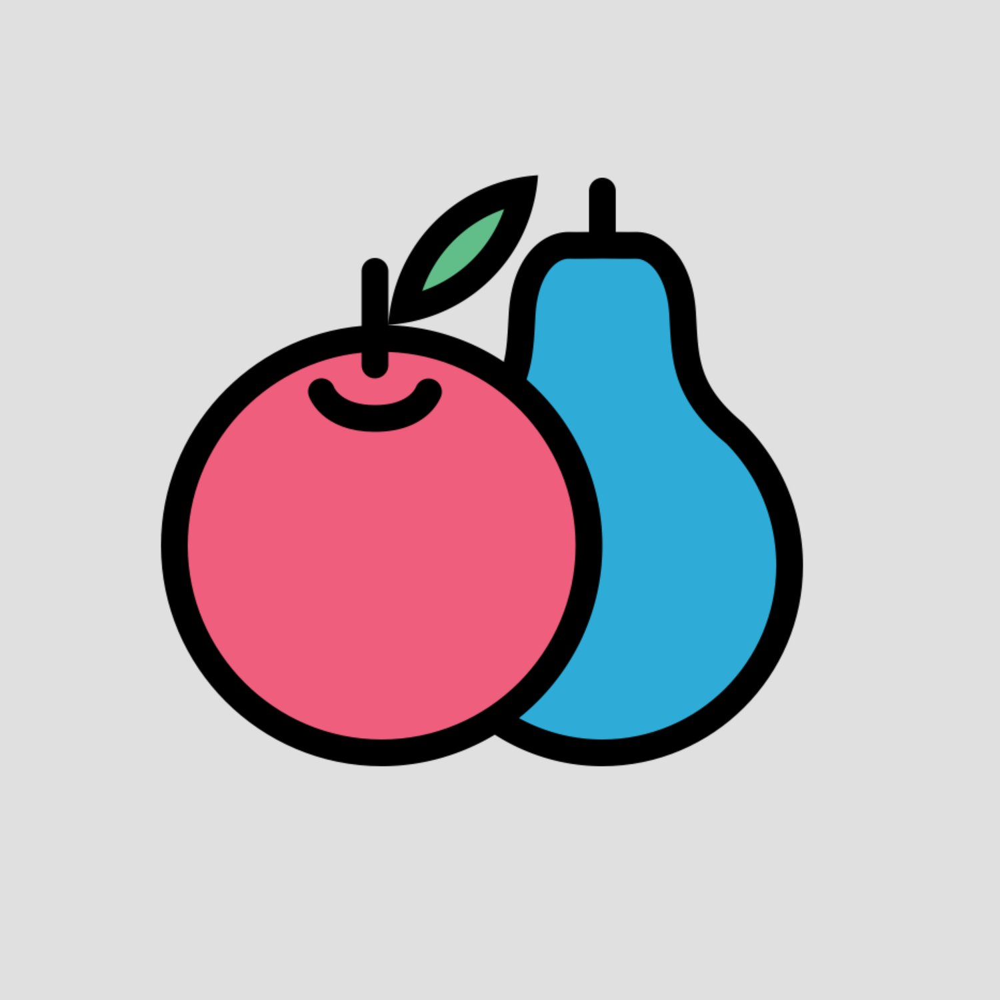
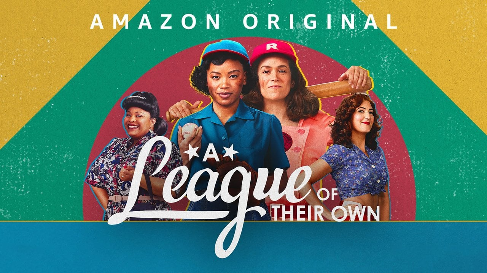

This time of year, I like to read spooky things—or rather, spooky-light. I’m talking less The Shining and more The Turn of the Screw by Henry James, “The Yellow Wallpaper” by Charlotte Perkins Gilman, and Mexican Gothic by Silvia Moreno-Garcia. Despite my stated aversion to some of Stephen King’s scariest stuff, his latest novel, Fairy Tale, was released just in time for my annual craving. It’s more fantasy than anything else, really (which if you read last month’s picks you know is in right now). But there’s a fair amount that could keep you up at night, and I couldn’t put it down.
Speaking of things that will haunt you, the podcast recommended this month by our editor Lys unravels some of the biggest lies in health and wellness. We’ve got some lighter (and not just spooky-light) picks below, too, and we finish off with some of our favorite works by Stephen King, which may just serve as my reading list this spooky season.

Our favorite Stephen King books

Jen:
11/22/63
David:
Wizard and Glass
Caty:
On Writing:
A Memoir of
the Craft
Joe:
Carrie

Hi Hi Puffy AmiYumi was a hit children’s cartoon in the mid-2000’s that fictionalized the adventures of the real pop duo Puffy AmiYumi. Those familiar with the show may remember the music of the show’s duo, which ranged from surf-rock to pop-punk. Most of the tracks in the show—and many of the real band’s songs—were written by Tamio Okuda.
Okuda is most notable for his work as a lead singer for the Japanese rock band, Unicorn, whose entire discography is incredible. You can trace the group’s artistic development through time: their earliest work contains influences of post-punk and new wave, while their later works explore psychedelic rock, swing, country, alternative, and folk. One of my favorite songs is “Daimeiwaku,” which literally translates into, “a great deal of trouble.” However, the song narrates a man’s grievances about daily life,
so I think “huge annoyance” is a more suitable translation. It’s a catchy
song with an adrenaline-driven and punk-influenced beat I think anyone
will enjoy.
Erik Delfin
design
associate
Go to Erik’s pick



The novel Lessons in Chemistry by Bonnie Garmus is all the rage in book club circles at the moment—and for good reason. It offers readers legit lessons in chemistry, along with heartbreak, cooking, feminism, and humor, all wrapped up in a well-woven plotline.

Go to Karen’s pick
Karen Henrie
senior editor
Lys Sorresso
editor
Since it debuted in the fall of 2020, Maintenance Phase has been my #1 podcast. Hosts Aubrey Gordon and Michael Hobbes are the self-professed “methodology queens” of the health and wellness sector and do deep-dives on everything from how the BMI is a load of racist junk to the history of fat camps to how Goop unfortunately shaped the wellness influencer space. I believe Maintenance Phase is doing a public service by bringing to light the absolutely toxic malarkey that goes into making everyone believe that being fat is bad, sugar is evil, the keto diet works, and Gwyneth Paltrow can tell you how to live your most authentic life. If you’re ready to say FU to diet culture and the wellness industry, Maintenance Phase will fortify you better than a protein shake.
Go to Lys’s pick

As a Geena Davis evangelist, I’ve always appreciated the 1992 film
A League of Their Own. How could a streaming series adaptation—without Geena Davis?!—possibly improve upon the original movie? But Amazon’s
A League of Their Own series turns the source material into something new and completely phenomenal. Co-creator and star Abbi Jacobson leads a diverse cast, all of whom deliver moving, believable, often funny performances. The series doesn’t shy away from gender, race, and LGBTQ+ topics and puts long-underrepresented stories at the center of
the narrative. Here’s to hoping this brilliant series gets another turn at bat with a second season.
Go to Ross’s pick
Ross Middleton
content manager
